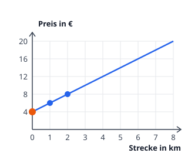
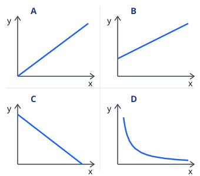
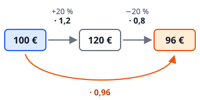

Medienübersicht
Alle Bilder, Audios und Videos dieser App mit ihrer Quelle und ihrer Lizenz.
Bilder

images/zuordnungen-hefte-punkte.svgQuelle: eigene Zeichnung. Lizenz: CC-BY-4.0.Verwendet auf: Tabelle und Koordinatensystem

images/zuordnungen-punkte-ablesen.svgQuelle: eigene Zeichnung. Lizenz: CC-BY-4.0.Verwendet auf: Tabelle und Koordinatensystem

images/zuordnungen-faktor.svgQuelle: eigene Zeichnung. Lizenz: CC-BY-4.0.Verwendet auf: Proportionale Zuordnungen

images/zuordnungen-produkt.svgQuelle: eigene Zeichnung. Lizenz: CC-BY-4.0.Verwendet auf: Antiproportionale Zuordnungen

images/zuordnungen-graph-proportional.svgQuelle: eigene Zeichnung. Lizenz: CC-BY-4.0.Verwendet auf: Graphen von Zuordnungen

images/zuordnungen-graph-hyperbel.svgQuelle: eigene Zeichnung. Lizenz: CC-BY-4.0.Verwendet auf: Graphen von Zuordnungen

images/zuordnungen-taxi.svgQuelle: eigene Zeichnung. Lizenz: CC-BY-4.0.Verwendet auf: Graphen von Zuordnungen

images/zuordnungen-vier-graphen.svgQuelle: eigene Zeichnung. Lizenz: CC-BY-4.0.Verwendet auf: Graphen von Zuordnungen

images/prozent-dreisatz.svgQuelle: eigene Zeichnung. Lizenz: CC-BY-4.0.Verwendet auf: Den Prozentwert berechnen

images/prozent-rueckwaerts.svgQuelle: eigene Zeichnung. Lizenz: CC-BY-4.0.Verwendet auf: Prozentsatz und Grundwert berechnen

images/prozent-vier-schritte.svgQuelle: eigene Zeichnung. Lizenz: CC-BY-4.0.Verwendet auf: Sachaufgaben zur Prozentrechnung

images/w3-faktor.svgQuelle: eigene Zeichnung. Lizenz: CC-BY-4.0.Verwendet auf: Zunahme und Abnahme mit dem Faktor

images/w3-vergleich.svgQuelle: eigene Zeichnung. Lizenz: CC-BY-4.0.Verwendet auf: Um wie viel Prozent mehr oder weniger?

images/w3-kette.svgQuelle: eigene Zeichnung. Lizenz: CC-BY-4.0.Verwendet auf: Mehrere Änderungen und Prozentpunkte